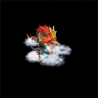

<!DOCTYPE html>
<html lang="en">
<head>
    <meta charset="UTF-8">
    <meta name="viewport" content="width=device-width, initial-scale=1.0">
    <title>Interactive Image Movement</title>
    <style>
        body {
            background-color: black;
            margin: 0;
            padding: 0;
        }
        #player {
            position: absolute;
            top: 0;
            left: 0;
            width: 100px;
            height: 100px;
            background-image: url('img/player_right.gif');
            background-size: cover;
            transition: all 0.3s ease-in-out;
        }
    </style>
</head>
<body>
    <div id="player"></div>

    <script src="https://code.jquery.com/jquery-3.6.0.min.js"></script>
    <script>
      $(document).ready(function(){
          // 双击屏幕任意处时，将#player标签的背景图设置为img/playerbig_right.gif
          $(document).dblclick(function() {
              $('#player').css('background-image', 'url(\'img/playerbig_right.gif\')');
          });
      
          // 随机生成标签并添加点击事件处理程序
          let enemy = $('').css({
              'position': 'absolute',
              'left': Math.random() * ($(window).width() - 50), // 随机生成位置
              'top': Math.random() * ($(window).height() - 50)
          }).appendTo('body').click(function(event) {
              // 检查点击事件的目标是否是img/player1.gif标签
              if ($(event.target).is('img.player1')) {
                  let enemyPosition = $(this).position();
                  let playerPosition = $('#player').position();
      
                  // 判断是否需要更换背景图为img/fighting.gif
                  if (playerPosition.left >= enemyPosition.left - 50 && playerPosition.left <= enemyPosition.left + 50) {
                      // 更换#player的背景图为img/fighting.gif
                      $('#player').css('background-image', 'url(\'img/fighting.gif\')');
      
                      // 恢复#player的背景图为img/player_left.gif，并将#player移动到被点击标签的左侧
                      setTimeout(function() {
                          $('#player').css('background-image', 'url(\'img/player_left.gif\')').animate({
                              'left': enemyPosition.left,
                              'top': enemyPosition.top
                          }, 500, function() {
                              // 动画完成后将敌人标签隐藏并重新生成
                              enemy.hide();
                              enemy.css({
                                  'left': Math.random() * ($(window).width() - 50),
                                  'top': Math.random() * ($(window).height() - 50)
                              }).show();
                          });
                      }, 1000);
                  }
              }
          });
      
          // 默认操作，移动#player标签和改变图片
          $(document).mousemove(function(event) {
              // 检查鼠标位置是否在敌人附近
              let playerPosition = $('#player').position();
              $('.enemy').each(function() {
                  let enemyPosition = $(this).position();
                  let distance = Math.sqrt(Math.pow(playerPosition.left - enemyPosition.left, 2) + Math.pow(playerPosition.top - enemyPosition.top, 2));
                  if (distance <= 150) {
                      // 显示战斗动画并让敌人标签消失
                      $('#player').css('background-image', 'url(\'img/fighting.gif\')');
                      $(this).hide();
                      return false; // 停止循环
                  }
              });
      
              // 如果没有在敌人附近，则进行正常移动并根据移动方向切换背景图
              let mouseX = event.pageX;
              let mouseY = event.pageY;
      
              // 设置移动范围的边界
              let minX = 0;
              let minY = 0;
              let maxX = $(window).width() - $('#player').width();
              let maxY = $(window).height() - $('#player').height();
      
              // 确保图像不会超出边界
              let newX = Math.max(minX, Math.min(mouseX - $('#player').width() / 2, maxX));
              let newY = Math.max(minY, Math.min(mouseY - $('#player').height() / 2, maxY));
      
              // 判断移动方向并设置相应的背景图
              let currentX = $('#player').position().left;
              if (mouseX > currentX) {
                  // 向右移动
                  $('#player').css('background-image', 'url(\'img/player_right.gif\')');
              } else {
                  // 向左移动
                  $('#player').css('background-image', 'url(\'img/player_left.gif\')');
              }
      
              // 停止之前的动画
              $('#player').stop(true, false);
      
              // 移动图像
              $('#player').animate({
                  'left': newX + 'px',
                  'top': newY + 'px'
              }, 300);
          });
      
          // 防止点击被击败标签的“击败”字样时也触发点击事件
          $('body').on('click', '.defeated', function(event) {
              event.stopPropagation();
          });
      });
    </script>
</body>
</html>